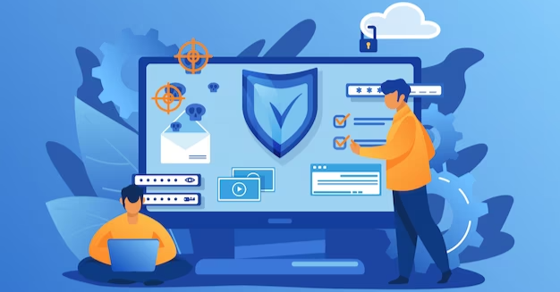

The Best Practices Prevention For Staying Safe From Zero Day Attacks
When it comes to cybersecurity, prevention is always better than cure. Zero-day attacks are one of the most difficult and dangerous threats to tackle. These malicious attacks leverage unknown weaknesses in software and applications to gain access to a system and steal, manipulate, or destroy sensitive data.
It is therefore essential for businesses to employ the best practices for zero-day attack prevention. The aim is to stay one step ahead of the malicious actors and protect the organization’s assets and information. phishprotection.com is a fantastic site to learn about zero day attack prevention.
Zero Day Attack Prevention Best Practices Are:
1. Leverage Windows Defender Exploit Guard
In 2010, Microsoft presented the Windows Defender Exploit Guard. This effectively mitigates zero day attacks by taking advantage of the following method: By disabling potentially malicious modules.
Attack surface reduction
Information transfer designed to prevent malware makes use of Office documents, scripts, and emails to stop attacks based on movement on Office-based information. Information transfer manages the execution of malicious, obfuscated macro code, JavaScript, VBScript, and PowerShell scripts.It can also prevent scripts from executing downloaded payloads or email-based executables.
Network protection.
To safeguard incoming and outgoing connections by means of network security systems, these block malware from communicating with a command-and-control server. Egress traffic is evaluated by hostname and IP reputation. Network connections to untrusted devices are prohibited.
Controlled folder access.
Controlled folder access helps monitor changes made by applications to files located in protected folders. It can help safeguard critical folders and limit access to authorized applications.
2. Consider next-generation antivirus.
Solutions involving file signatures for virus detection might not work very well if you come up against zero-day threats. As you might imagine, traditional antivirus software functions well if you have access to the contact details of publicity campaigns for old security vulnerabilities. However, zero-day threats overwhelm traditional antivirus.
Next generation antivirus technology can’t identify all zero day attacks. However, it can limit the potential for attackers to push through an endpoint with unknown malware.
3. Strong patch management protocols
Organizations should follow a change management plan accordingly. The IT service, development, and protection teams must communicate with each other concerning how the strategy would play out during a work day.

Larger companies should consider the benefits of an automated patch management solution. Based on automated solutions, the vendor who supplies the system without having to manually locate the updates automatically manufactures the needed alterations, which patches connect to automated tests, and which conclusions are then disseminated with a patch to production.
4. Input validation
In simple words, input validation (also referred to as data validation) is the appropriate examination of any data offered or produced by an application or user. It protects businesses from the vulnerabilities and scanning and patch management procedures. It also empowers businesses to confront attacks in real time.
5. Implement a strong data backup system.
A well-made backup ensures an organization is able to deal with losses correctly. It also means that the organization will be safeguarded from catastrophic cyber threats. Follow the rule of three to two to back up. Reliable backups are well worth the price. It benefits executives as well as security professionals.
In summary, zero day attacks are a serious threat to the security of your organization. It is essential to ensure that you have the proper security measures in place to detect and prevent these attacks. Implementing the best practices outlined in this article will help you to stay ahead of the curve and protect your organization from potential cyber attacks. With the right strategies, you can stay one step ahead of the attackers and keep your data safe.